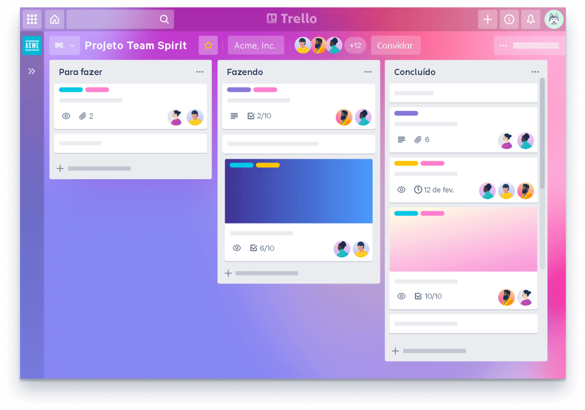

O Trello ajuda os times a avançar no trabalho.
Colabore, gerencie projetos e alcance novos picos de produtividade. De arranha-céus até o home office, a maneira como seu time trabalha é única. Realize tudo com o Trello.


Veja os preços do Trello
Tanto faz se o seu time tem 2 ou 2.000 pessoas: o Trello pode ser personalizado para a sua empresa. Saiba qual opção é a melhor para você.

O que é o Trello?
O Trello é a ferramenta visual que possibilita ao time o gerenciamento de qualquer tipo de projeto, fluxo de trabalho ou monitoramento de tarefas.

Conheça o Trello Enterprise
A ferramenta de produtividade amada pelos times, combinada com os recursos e a segurança necessários para escalabilidade.
É mais do que trabalho. É a maneira de trabalhar juntos.
Comece com um quadro, listas e cartões do Trello. Personalize e expanda essas funcionalidades com mais recursos à medida que o trabalho em equipe cresce. Gerencie projetos, organize tarefas e desenvolva o espírito de equipe — tudo em um só lugar.
Faça como mais de 2 milhões de times que usam o Trello no mundo todo para produzir mais.


Recursos para ajudar no sucesso do time
Para capacitar um time produtivo, é preciso usar uma ferramenta poderosa (e ter muitos lanches). De reuniões e projetos a eventos e definição de metas, os recursos intuitivos do Trello dão a qualquer time a capacidade de configurar e personalizar fluxos de trabalho com rapidez para quase qualquer coisa.

O quadro é apenas o começo
Listas e cartões são os elementos fundamentais da organização do trabalho em um quadro do Trello. Cresça a partir daí com atribuições de tarefas, cronogramas, métricas de produtividade, calendários e muito mais.
+ Saiba maisOs cartões contêm tudo de que você precisa
Os cartões do Trello são um portal para trabalhos mais organizados, onde cada parte da tarefa pode ser gerenciada, rastreada e compartilhada com colegas de time. Abra qualquer cartão para descobrir um ecossistema de checklists, datas de entrega, anexos, conversas e muito mais.
+ Saiba mais

Automação sem código
Deixe os robôs fazerem o trabalho, para que o time possa manter o foco no trabalho que importa. Com a automação integrada do Trello, o Butler, reduza o número de tarefas tediosas (e cliques) no quadro de projeto, aproveitando o poder da automação para todo o time.
+ Saiba maisIntegre as melhores ferramentas de trabalho
Conecte com facilidade os aplicativos que seu time já usa ao fluxo de trabalho do Trello ou adicione um Power-Up que ajude a ajustar uma necessidade específica. Com centenas de Power-Ups disponíveis, os desejos do fluxo de trabalho do seu time são realizados.
+ Saiba mais